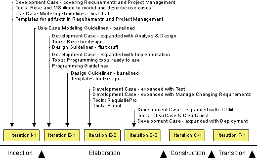
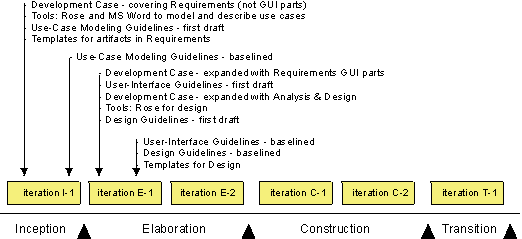
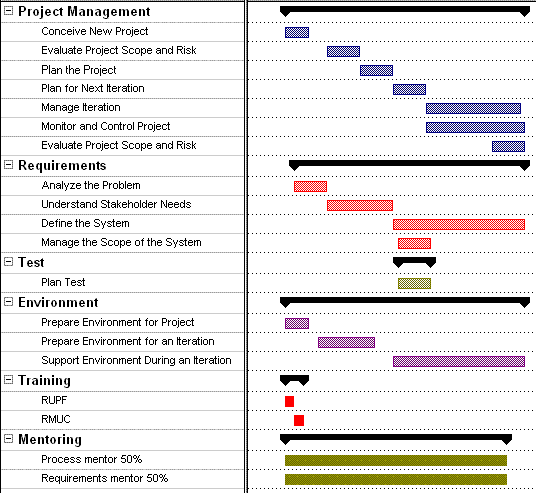

|
These guidelines describe how to implement process and tools in a software development project by
performing the activities described in the Environment discipline. It also discusses the Project Management discipline,
which deals with planning the project, identifying risks, and managing, monitoring, and evaluating the
project.
It's important to understand that there are different ways to implement process and tools, as described in the section
" Approaches to Implementing Process and Tools". The
approach you choose depends on the current state of the project and its surrounding organization, therefore, do an
assessment of the project and its surrounding organization (see  Artifact: Development Organization Assessment). Artifact: Development Organization Assessment).
These guidelines describe some possible approaches for implementing a process in a project. In addition, Concept: Environment Practices describes some fundamental practices that are
useful for implementing the environment of a software project. For more information on the process tailoring
aspects of a process implementation, see Tailoring RUP.
These general guidelines apply in almost every project:
-
Before the project starts: Before the project actually starts, people who act as process engineers, tool
specialists, and project managers must be trained in the Rational Unified Process (RUP). This is crucial to the
project's success. If the project members do not know what to do, they probably will not succeed.
-
Inception phase: During this phase, you typically focus on understanding how to improve the way you manage
requirements (Requirements discipline) and how you manage the project (Project Management discipline).
-
Elaboration phase: By the end of the Elaboration phase, all process and tools are in place. The most
critical part of this phase is often how to perform configuration and change management because in the Construction
phase, the work is performed by development teams working in parallel.
-
Construction phase: No new process or tools are introduced in this phase. The focus here is to produce the
product, therefore the development environment must be stable. In the Construction phase, the motivation is to get
new people on the project up-to-speed.
-
Transition phase: No new process or tools are introduced. In the Transition phase, the focus shifts from
project-specific process improvement to project post-mortems, gathering project experiences from the current
project, summarizing them, and packaging them in a form that future projects can use. These gathered
experiences serve as input to improving process and tools for developing of the next evolution of the product.
Process ceremony varies a lot in different development organizations. Some are very process mature, and have dedicated
process groups to look after the definition and improvements of the process throughout the organization. Others are
only concerned with project-specific tailoring.
The approach taken to tailor the process for the project, depends heavily on the organization's process ceremony, as
well as several other factors. For instance:
For more information on the factors affecting process implementation, see Guideline: Process Discriminants.
The following are the basic approaches to implementing process and tools on a software development project:
-
" Change everything". This means that the project adopts the entire RUP and a
complete set of new tools.
-
" Improve process and tools". This means that the project decides
to improve some areas of the process and tools by adopting parts of the RUP and supporting tools.
How much of the RUP to adopt and how many new tools you decide to implement on a specific project depends on a number
of factors. These factors are described in Guideline: Process Discriminants. These are factors you typically uncover during an assessment of the project and its
surrounding organization. This information is captured in Artifact: Development Organization Assessment.
A project can decide to adopt the complete RUP and start to use a new set of tools for one or several of the following
reasons:
-
There is no process or tools in place and the project needs everything-a complete process and all tools.
-
All, or most, of the people are new hires and no commonly accepted way of working exists.
-
The project will shift to a new technology for the organization, which means that the existing process and tools
will become obsolete.
If you decide to introduce the complete RUP and tools onto your project, then it's important to incrementally implement
the process and tools. By implementing process and tools in a step-by-step procedure, it's easier to manage the risks
and it makes these changes less overwhelming for the people on the project. The following diagram illustrates when the
different Environment work products would be developed over a project's lifecycle.

The evolution of the Environment work products in a project where "everything is new".
Comments to the plan:
-
Overall: The Business Modeling discipline is skipped altogether.
-
Inception: Focus on introducing the Requirements and Project Management disciplines. To reduce the number of
new factors, the user-interface parts of Requirements are not introduced. The project manager decides what parts of
the Project Management discipline to use.
-
Elaboration iteration E-1: Analysis & Design and Architecture are most important in the Elaboration
phase. Automated Test and Configuration & Change Management are not as crucial this early in the project
because the number of project members is relatively low. This can be introduced later in the project.
-
Elaboration iteration E-2: Test tools and process are introduced to automate testing. Rational RequisitePro
is introduced to manage the changing requirements.
-
Elaboration iteration E-3: In the Construction phase, the work will be performed by development teams
working in parallel. Therefore, it's crucial to have the Configuration & Change Management discipline in place
at the end of the Elaboration phase. The deployment manager decides how to perform the discipline in the Deployment
discipline.
-
Construction: Nothing new is introduced. From an Environment perspective, the focus during the Construction
phase is to get all new people on the project up-to-speed.
-
Transition: Nothing new is introduced. The process and tools are refined as needed.
The people on a project in an organization where a process and tools are in place, have the capability to develop a
system. These people have a common way of working, which is a process that may be more, or less, well
documented.
The long-term goal may be to adopt the complete RUP and a complete set of new tools. However, the short-term goal is to
improve on one or several areas of the process and tool support. These should be areas that have high improvement
potential.
The diagram below shows an example of a project that has decided to adopt the Requirements discipline along with tools,
such as RequisitePro and Rational Rose, to improve the way requirements are managed. The project has also decided to
introduce the Analysis & Design discipline.

The evolution of the Environment work products when improving Requirements and Analysis & Design.
It's important to understand that the diagram above is only an example. The parts of the process you decide to improve
on will differ between projects, depending on the problems and needs of a particular project. You must assess the
project and its surrounding organization to find out those parts of the process you want to improve or which tools you
want to introduce.
The following is an example of an iteration in the Inception phase where the Requirements discipline is introduced.
Each entry in the Gantt chart is described in detail after the diagram.

Example of an iteration in the Inception phase
The basic workflow described for Classic RUP Inception applies with these variations and extensions.
Project Management
Bring the project from the initial germ of an idea to a point at which a reasoned decision can be made to continue
or abandon it. The main results are initial drafts of Artifact: Business Case, Artifact: Software Development Plan, and Artifact: Risk List.
Identify risks in the project, including those risks associated with implementing the new process and tools. The
result is the Artifact: Risk List.
Plan the phases. The main result is the section titled Project Plan in the Software-Development Plan. This includes the Phase Plan where
you'll find the major milestones with their achievement criteria, including criteria for the Environment
discipline.
Note: The tailored Development Process has a major impact on the Software Development Plan, and vice versa. Therefore, the
development of the project plan and the tailoring of the process must be coordinated.
Plan the iteration in detail, including the Environment discipline and all other disciplines. The main result is a
Artifact: Iteration Plan, with all activity details and tasks of
the Environment discipline, as well as all other process disciplines.
The use of process and tools is appraised as part of the evaluation of the iteration. The results are:
The project manager monitors the daily work, including the process and tools.
At the end of the iteration, the risks are re-evaluated, including risks associated with process and tools. Some
risks are mitigated during the iteration and new risks are identified. The primary result is an updated Artifact: Risk List.
Requirements
No specific changes.
Test
Some logistic aspects of the Artifact: Test Strategy is defined that will provide the initial
reasoning for the resourcing the test effort.
The test designer and a small team of testers verify that the key elements of the test approach will work against
the Artifact: Architectural Proof-of-Concept and third-party
component selections are verified as being testable.
Environment
Assess the current state of the organization and decide what parts of the process and those tools on which you want
to focus in the first iterations. In this case the project decided, based on the assessment, to start implementing
process and tools.
Note: The Software Development Plan has a major impact on the tailored
Development Process and vice versa. Therefore, the tailoring
of the process and the development of the project plan must be coordinated.
The results are:
Prepare the process and tools for the Requirements discipline together with the supporting tools so the people on
the project can start using them. (Of course, other disciplines can be prepared.) See Task: Tailor the Development Process for the Project .
Make sure that the people on the project understand how to use the development process, use-case modeling
guidelines, and tools. In addition to standard training courses, we recommend that you arrange a one-day workshop
where the project members will get hands-on experience. See Task: Launch Development Process.
The results of performing the activity are:
-
The Development Process where the Requirements discipline is
described in detail, including
-
-
Requirements Tools are set up and ready to use by the people on the
project.
The system administrator supports the developer during the iteration.
Training
-
All members of the project should attend a course that gives an overview of the RUP in
order to get an overview of the project's lifecycle.
-
The people who work on the RUP discipline that is being "rolled out"
should attend a course where they learn the details of the discipline.
Mentoring
Mentoring is key to a successful process implementation. In general, the following mentors are needed:
-
Process Mentor 50%. Someone who acts as a process engineer to support the
project manager and other people on the project in using and configuring the process.
-
<Discipline Specific> Mentor 50%. Someone who facilitates the
discipline-specific work, by leading workshops, reviewing results, and answering specific questions.
For more information on mentoring, see Concept: Mentoring. |